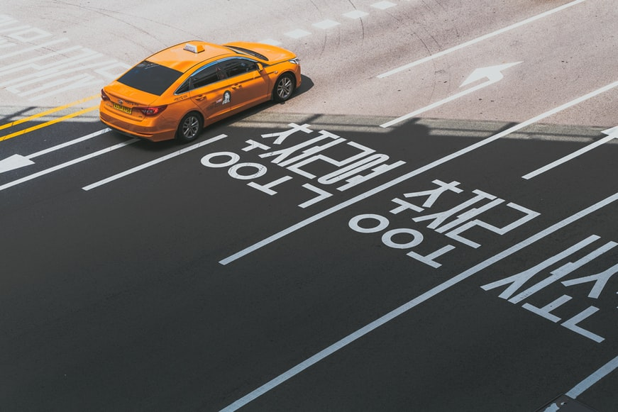

Métodos de transporte

Avión
Korean Air y Asiana, las dos principales aerolíneas nacionales, vuelan a/desde una docena de
aeropuertos
locales, y suelen ofrecer tarifas idénticas y razonables; la competencia la aportan varias aerolíneas de
bajo coste. La mayoría de los vuelos nacionales sale del aeropuerto de Gimpo, en Seúl, pero desde
Incheon
también hay vuelos domésticos a Busan, Daegu y Jeju-do. Budget T’way Airlines, aerolínea de bajo coste,
ha
incrementado su oferta de vuelos a Jeju-do, desde Gimpo, Daegu o Gwangju. El trayecto más largo, entre
Gimpo
(Seúl) y Jeju-do, dura algo más de 1 h.
Los precios son un 15% más baratos de lunes a jueves, y es más fácil encontrar plazas. Los vuelos en
días
festivos tienen un recargo y suelen agotarse. Niños y estudiantes gozan de descuentos. Los extranjeros
deben
llevar siempre el pasaporte en los vuelos nacionales para acreditar su identidad.
Bicicleta
El Gobierno fomenta la bicicleta como medio de transporte ecológico y saludable. La autoridad
metropolitana de Seúl ha ampliado la infraestructura para ciclistas, que cuenta con Seoul Bike
(www.bikeseoul.com), plataforma abierta también al visitante. Aun así, Corea es un país
poco propicio
para los ciclistas, debido a los deficientes hábitos de conducción, sobre todo en zonas urbanas.
Dicho esto, es buena idea alquilar una bicicleta para trayectos cortos en zonas con carriles-bici o poco
tráfico. La tarifa mínima ronda los 3000 KRW/h, y se ofrecen descuentos por día completo. Hay que
entregar el pasaporte u otro documento identificativo, o un depósito. No suelen disponer de cascos ni de
candados.
La web Bicycling in Korea (www.janboonstra.com), de Jan Boonstra, es una útil fuente de
información.
Autobus
Los servicios de larga distancia viajan a todos los rincones del país, cada 15 min entre las principales
ciudades, y al menos cada hora a poblaciones pequeñas, pueblos, templos y parques nacionales y
provinciales. La frecuencia que se indica en esta guía es aproximada, pues no se hallan sujetos a un
horario regular. El personal de las estaciones procura que nadie se equivoque de autobús, por lo que
siempre hay ayuda a mano. La mayoría no tiene lavabo, pero en los trayectos largos el conductor efectúa
una parada de 10 min cada pocas horas. Si el vehículo no se llena, el viajero puede cambiar el asiento
asignado por el que desee.
Los autobuses directos enlazan las principales ciudades, y los interurbanos hacen más paradas y viajan a
poblaciones más pequeñas. Los vehículos son parecidos, pero utilizan estaciones distintas (a menudo
cercanas entre sí). Las autopistas disponen de un carril específico para autobuses, operativo los fines
de semana, y que reduce los retrasos del tráfico intenso. Siempre salen puntualmente –a veces incluso
antes de la hora asignada– y llegan a muchos más sitios que los trenes, pero no son tan cómodos (a veces
están sobrecalentados) ni fluidos, por lo que en viajes de larga distancia es preferible el ferrocarril.
Los udeung (autobuses directos de clase superior) tienen tres asientos por fila en lugar de cuatro, pero
cuestan un 50% más que los ilban (estándar). Los servicios que circulan después de las 22.00 tienen un
recargo de un 10% y suelen ser de clase superior.
Un trayecto de 1 h en un autobús estándar cuesta unos 4000 KRW.
Los servicios son tan frecuentes que no hace falta comprar billete con antelación, salvo los fines de
semana y en períodos vacacionales; los billetes se venden en las propias estaciones. Se pueden consultar
los horarios en www.kobus.co.kr y www.hticket.co.kr.